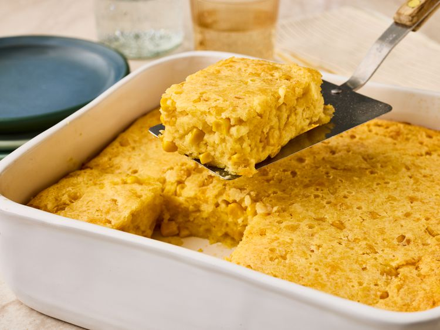

Corn Casserole

Description
This corn casserole is truly the most delicious stuff! A bit like a cross between corn soufflé and a slightly sweet corn pudding. Try it! I know you will love how easy it is to prepare, but you will especially love the taste!
Ingredients
- 1 (15 ounce) can whole kernel corn, drained
- 1 (14.75 ounce) can creamed corn
- 1 (8.5 ounce) package dry cornbread mix
- 1 cup sour cream
- ½ cup butter, melted
- 2 large eggs, beaten
Steps
- Gather all ingredients and preheat the oven to 350 degrees F (175 degrees C). Lightly grease a 9x9-inch baking dish.
- Mix whole and creamed corn, cornbread mix, sour cream, melted butter, and eggs together in a medium bowl until well combined.
- Spoon mixture into the prepared dish.
- Bake in the preheated oven until the top is golden brown and a toothpick inserted in the center comes out clean, about 45 minutes.
- Serve and enjoy!
Home